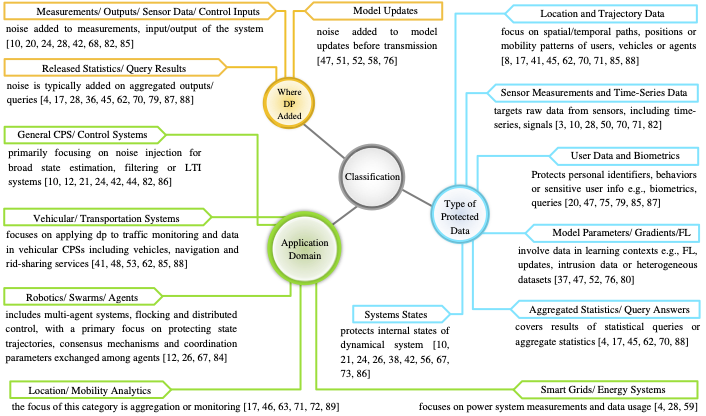

Introduction
Why a new SoK is needed in CPS-DP.
Privacy has become important due to the rapid development of autonomous and cyber-physical systems (CPS). These systems are deployed in critical applications such as industrial control and healthcare, and they rely on continuous data exchange. Differential Privacy (DP) is a leading method for protecting that data, but integrating DP into safety-critical real-time CPS introduces constraints that go beyond the usual privacy–utility trade-off. In CPS, a privacy mechanism must also preserve system safety: task deadlines, control stability, constraint satisfaction and physical-state bounds.
Prior surveys provide valuable taxonomies but typically emphasize privacy and discuss utility mostly as accuracy degradation, while safety is treated implicitly or omitted. Harpo addresses this gap by providing a consistent, quantitative evaluation that highlights where safety-aware privacy reporting is still missing in the literature.
Safety in CPS is not a single quantity. In the surveyed literature it appears in three operational forms: (i) closed-loop stability, (ii) constraint satisfaction on physical states or inputs, and (iii) explicit hazard/risk metrics tied to collisions, failures or unsafe physical states. Harpo is designed to capture all three.
Methodology
A three-step procedure: parameter selection, weight assignment, empirical robustness. Each step is grounded in established literature so the framework is reproducible end-to-end.
Step 1 — Parameter Selection (Thematic Synthesis)
We picked the sub-criteria in Table 1 through a two-part process. Top-down, we used established frameworks as the skeleton: the NIST CPS Framework for the Safety dimension, Dwork's definition of differential privacy for the Privacy dimension, and standard control-safety treatments for the operational-safety sub-criteria. Bottom-up, we read all 47 primary research papers and recorded the evaluation evidence each paper reports; recurring patterns became Boolean sub-criteria. This follows the spirit of thematic synthesis in qualitative research.
Inclusion and exclusion rules
Inclusion: a candidate sub-criterion is included if either (a) it corresponds to a clause in NIST, Dwork's DP definition, or a recognized control-safety treatment; or (b) it appears as an explicit evaluation dimension in at least three papers in the corpus; and (c) it is operationalizable as a Boolean.
Exclusion: sub-criteria specific to a single subdomain (e.g., "PMU phasor noise tolerance"), non-Boolean-operationalizable criteria (e.g., "elegance of proof"), and duplicates of an existing sub-criterion at the same granularity.
Step 2 — Weight Assignment (Tier-Based SMARTS)
Each sub-criterion is assigned a weight using the tier-based variant of SMARTS (Edwards & Barron 1994), a standard MCDA method. Sub-criteria fall into one of three importance tiers determined by fixed rules:
- Primary tier (weight 2k): captures scope across multiple categories within the dimension. Only P6 (Breadth of Protected Data Types) qualifies in our framework.
- Standard tier (weight k): the default. Captures the primary form of evidence for an evaluation aspect (e.g., mechanism description, formal ε guarantee, accuracy metric).
- Secondary tier (weight k/2): strictly weaker forms of a sibling sub-criterion (e.g., a mention versus a mathematical representation), or peripheral aspects of the dimension.
For each dimension d, the normalization factor is chosen so weights sum to 1:
kd = 1 / (2 · nPrimary + nStandard + ½ · nSecondary)
Applied to our parameter list, this yields k = 0.10 for every dimension, producing tier weights of 0.20 / 0.10 / 0.05 — the exact values in Table 1. Any researcher who applies the same three tier rules to the same parameter list will reproduce these weights.
Step 3 — Sensitivity Analysis
To verify that the ranking is not an artifact of the weight choice, we re-score every paper under two alternative weight schemes — W2 (each sub-weight multiplied by an independent uniform factor in [0.75, 1.25] and renormalized) and W3 (all Safety sub-weights scaled by 1.5× and renormalized). We compute the Spearman rank correlation ρ between the W1 baseline ranking and each alternative.
| Dimension | ρ(W1, W2) | ρ(W1, W3) |
|---|---|---|
| Privacy | 0.9998 | 1.0000 |
| Utility | 0.9994 | 1.0000 |
| Safety | 0.9998 | 1.0000 |
The result is essentially perfect rank invariance. Part of this robustness is structural: 29 of the 47 papers receive a Safety score of zero, and zero times any non-negative weight is still zero — so those papers stay tied at the bottom under any reweighting. The Safety ranking is anchored at the bottom by the data, not by our weight choice.
Paper Selection (PRISMA-Style)
The corpus was built through a reproducible, auditable search.
Following the PRISMA 2020 guidelines, we queried IEEE Xplore, ACM Digital Library, ScienceDirect, SpringerLink, arXiv, Google Scholar, and the proceedings of IEEE S&P, USENIX Security, NDSS and PETS. Date range: publications from 2010 through 2025 (15-year window). Searches were executed between June and July 2025.
Search query and screening rules
Boolean query:
("differential privacy")
AND ("cyber-physical systems" OR "autonomous system")
AND ("privacy-utility" OR "safety" OR "utility")
Inclusion criteria. A paper is included as a primary research paper if it (1) proposes, analyzes or evaluates a DP mechanism (CDP/LDP/RDP/zCDP/ε-indistinguishability/ geo-indistinguishability or a documented variant); (2) applies the mechanism in a cyber-physical or autonomous-systems context; (3) is peer-reviewed or a widely cited arXiv preprint; (4) is written in English.
Exclusion criteria. We excluded papers that (i) treat DP only in passing without a CPS contribution; (ii) treat CPS without DP;
Taxonomy of Research
The 47 primary papers are organized along three dimensions: type of protected data, application domain, and where in the system DP noise is injected.

The Harpo Framework
A Python evaluator that reads two JSON files and outputs three scores.
Harpo takes two JSON inputs: paper.json (a paper-specific Boolean checklist filled
by the evaluator) and weight.json (the fixed per-criterion weights, identical
across all papers). For every sub-criterion marked true, the corresponding weight
is added to the total. The output is three normalized scores in [0, 1] — one per dimension.
{
"Privacy": {
"P1a": true, "P1b": true, "P1c": true,
"P2": true,
"P3a": true, "P3b": true, "P3c": true,
"P4a": true, "P4b": true,
"P5": true,
"P6": false
},
"Utility": {
"U1a": true, "U1b": true,
"U2a": true, "U2b": true,
"U3a": true, "U3b": true,
"U4a": true, "U4b": true,
"U5a": true, "U5b": true
},
"Safety": {
"S1a": false, "S1b": false, "S1c": false,
"S2a": true, "S2b": true,
"S3a": true, "S3b": true,
"S4a": true, "S4b": true,
"S5a": true, "S5b": true,
"S6a": false, "S6b": false
}
}{
"Privacy": {
"P1a": 0.10, "P1b": 0.10, "P1c": 0.10,
"P2": 0.10,
"P3a": 0.05, "P3b": 0.10, "P3c": 0.05,
"P4a": 0.05, "P4b": 0.05,
"P5": 0.10,
"P6": 0.20
},
"Utility": {
"U1a": 0.10, "U1b": 0.10,
"U2a": 0.10, "U2b": 0.10,
"U3a": 0.10, "U3b": 0.10,
"U4a": 0.10, "U4b": 0.10,
"U5a": 0.10, "U5b": 0.10
},
"Safety": {
"S1a": 0.10, "S1b": 0.10, "S1c": 0.10,
"S2a": 0.10, "S2b": 0.05,
"S3a": 0.10, "S3b": 0.05,
"S4a": 0.10, "S4b": 0.10,
"S5a": 0.05, "S5b": 0.05,
"S6a": 0.05, "S6b": 0.05
}
}def main(paper_file, weights_file):
paper, weights = load(paper_file), load(weights_file)
result = {}
for dim in ("Privacy", "Utility", "Safety"):
p = paper.get(dim, {})
w = weights.get(dim, {})
result[dim] = round(compute_score(p, w), 3)
print(json.dumps(result, indent=2)){
"Privacy": 0.80,
"Utility": 1.00,
"Safety": 0.60
}Harpo Sub-Criteria and Weights (Table 1)
Eleven Privacy + ten Utility + thirteen Safety sub-criteria. Weights are determined by tier assignment per Step 2 of the methodology.
| Code | Criterion | Sub-Criterion | Weight |
|---|---|---|---|
| Privacy | |||
| P1a | Privacy Mechanism | Mention of Mechanism | 0.10 |
| P1b | Privacy Mechanism | Mechanism Description | 0.10 |
| P1c | Privacy Mechanism | Evidence or Implementation | 0.10 |
| P2 | Formal Guarantees | Explicit Parameters | 0.10 |
| P3a | Attacker Modeling | Mention of Adversary | 0.05 |
| P3b | Attacker Modeling | Capabilities Defined | 0.10 |
| P3c | Attacker Modeling | Mathematical Representation | 0.05 |
| P4a | Temporal Privacy | Mention of Temporal Aspects | 0.05 |
| P4b | Temporal Privacy | Composition Formally Analyzed | 0.05 |
| P5 | Hybrid or Multi-Layer Privacy | Combination of Multiple Mechanisms | 0.10 |
| P6 | Data Coverage | Breadth of Protected Data Types | 0.20 |
| Utility | |||
| U1a | Accuracy Reporting | Mention of Metrics | 0.10 |
| U1b | Accuracy Reporting | Results Provided | 0.10 |
| U2a | Baseline Comparison | Baseline Identification | 0.10 |
| U2b | Baseline Comparison | Quantitative Comparison | 0.10 |
| U3a | Robustness Analysis | Test Scenarios Defined | 0.10 |
| U3b | Robustness Analysis | Results Analyzed | 0.10 |
| U4a | Real-System Validation | System Description | 0.10 |
| U4b | Real-System Validation | Validation Evidence | 0.10 |
| U5a | Generalization | Multiple Scenarios/Datasets | 0.10 |
| U5b | Generalization | Generalization Results | 0.10 |
| Safety | |||
| S1a | Formal Safety Verification | Mention of Mechanism | 0.10 |
| S1b | Formal Safety Verification | Application Described | 0.10 |
| S1c | Formal Safety Verification | Results Provided | 0.10 |
| S2a | Safety Constraints | Constraints Defined | 0.10 |
| S2b | Safety Constraints | Integration Provided | 0.05 |
| S3a | Adversarial Safety Resilience | Adversarial Scenarios | 0.10 |
| S3b | Adversarial Safety Resilience | Resilience Tested | 0.05 |
| S4a | Validation Scenario | Scenarios Described | 0.10 |
| S4b | Validation Scenario | Validation Results | 0.10 |
| S5a | Real-Time Safety Modeling | RT Modeling | 0.05 |
| S5b | Real-Time Safety Modeling | Scalability/Physical Link | 0.05 |
| S6a | Safety Integration | Explicit Modeling | 0.05 |
| S6b | Safety Integration | Link to Safety | 0.05 |
Per-Paper Scores
Harpo scores for the 47 primary research papers. Rows with multiple references group papers that received identical scores on every sub-criterion.
| Reference | Privacy | Utility | Safety |
|---|---|---|---|
| [1] | 0.90 | 0.70 | 0.00 |
| [2] | 0.35 | 0.40 | 0.20 |
| [4] | 0.80 | 1.00 | 0.60 |
| [8] | 0.90 | 0.40 | 0.50 |
| [11] | 0.25 | 0.60 | 0.45 |
| [12] | 0.70 | 0.80 | 0.00 |
| [13, 22] | 0.95 | 0.80 | 0.50 |
| [15] | 0.40 | 0.50 | 0.00 |
| [16] | 0.95 | 0.40 | 0.75 |
| [19] | 0.85 | 0.50 | 0.60 |
| [21, 54] | 0.60 | 0.40 | 0.00 |
| [30] | 0.10 | 0.20 | 0.00 |
| [31] | 0.75 | 0.90 | 0.45 |
| [32, 60, 77] | 0.65 | 0.20 | 0.00 |
| [33] | 0.85 | 0.60 | 0.45 |
| [35] | 0.70 | 0.40 | 0.00 |
| [36] | 0.90 | 0.40 | 0.75 |
| [37] | 0.65 | 0.60 | 0.45 |
| [38] | 0.75 | 0.70 | 0.65 |
| [39, 63] | 0.75 | 0.90 | 0.00 |
| [41] | 0.45 | 0.20 | 0.00 |
| [43] | 0.45 | 0.70 | 0.00 |
| [44] | 0.50 | 0.40 | 0.00 |
| [45] | 0.55 | 0.40 | 0.00 |
| [47] | 0.70 | 0.40 | 0.50 |
| [48] | 0.65 | 0.60 | 0.00 |
| [50] | 0.60 | 0.90 | 0.00 |
| [59] | 0.75 | 0.60 | 0.40 |
| [62, 75] | 0.80 | 1.00 | 0.00 |
| [64] | 0.65 | 0.40 | 0.00 |
| [66] | 0.35 | 0.20 | 0.00 |
| [67] | 0.90 | 0.80 | 0.00 |
| [68] | 0.80 | 0.60 | 0.30 |
| [69] | 0.70 | 0.70 | 0.00 |
| [70] | 0.10 | 0.10 | 0.00 |
| [71] | 0.35 | 0.40 | 0.35 |
| [73] | 0.85 | 0.60 | 0.80 |
| [74] | 0.55 | 0.40 | 0.25 |
| [76] | 0.65 | 0.70 | 0.00 |
| [78] | 0.30 | 0.70 | 0.00 |
| [79] | 0.50 | 0.80 | 0.00 |
2D Visualization
47-paper corpus projected onto the Privacy–Utility plane. The third dimension (Safety) is encoded redundantly through both marker size and marker color (viridis colormap: dark = Safety near 0, yellow = Safety near 1). The redundant encoding makes Safety perceivable from two independent visual channels, so the headline finding remains visible under grayscale printing or colorblind viewing. Papers with identical (P, U, S) scores are plotted as a single marker with a combined reference label. Hovering over a marker reveals that paper's reference number and individual Privacy, Utility and Safety scores.
3D Visualization
The full 3D visualization is embedded below. Each point is one paper (or group of papers with identical scores); the three axes are Privacy, Utility and Safety; color encodes Safety. Drag to rotate, scroll to zoom, hover to inspect.
What Harpo Does and Does Not Do
Harpo is a reporting-completeness framework. It quantifies how thoroughly each paper documents its Privacy, Utility and Safety evaluations. It is explicitly not a DP-correctness verifier:
- It does not re-verify DP proofs.
- It does not audit ε / δ values.
- It does not estimate empirical leakage.
- It does not assess whether a paper's claimed DP guarantee actually holds under stated assumptions.
Those questions are valuable but require per-mechanism re-analysis that is beyond the scope of a scoring-based SoK. Harpo's value is in making reporting completeness comparable across a heterogeneous literature.